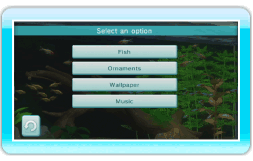
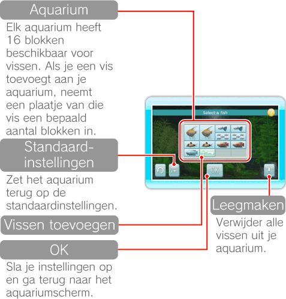
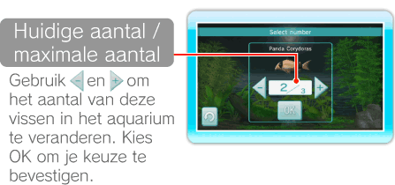
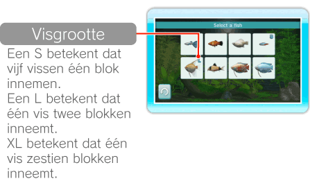
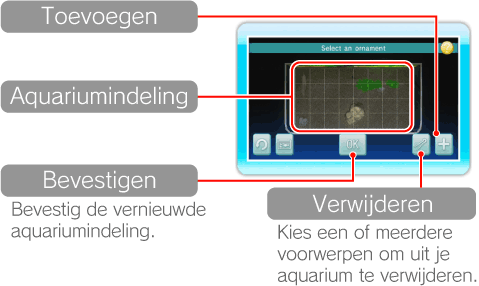
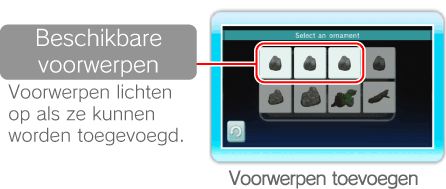
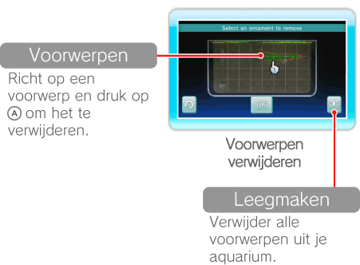

15 |
Aquariuminstellingen |
 |
|

Richt op
Kies een vissoort en vervolgens het aantal vissen voor je aquarium. Het aantal vissen dat je kunt toevoegen, is beperkt en hangt af van de grootte van de vissen. Als je klaar bent met kiezen, kies je OK om je instellingen te bewaren. 
Richt op een blok met een vis en druk op  Richt op 
Verplaats en verander de inrichting van je aquarium, zoals takken en stenen. Als je klaar bent met het inrichten van je aquarium, kies je OK om te bevestigen. Waterplanten worden automatisch voor je geplant. 
Richt op een voorwerp en druk op  om het op te pakken. Richt op de plek waar je het naartoe wilt verplaatsen, en druk opnieuw op om het daar neer te zetten. Met om het op te pakken. Richt op de plek waar je het naartoe wilt verplaatsen, en druk opnieuw op om het daar neer te zetten. Met Opmerking: als voorwerpen rood oplichten, kunnen ze niet op die plek worden neergezet.
Kies   |
 |
 |
 |